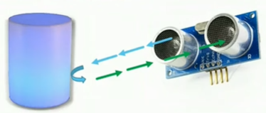

Micro Servomotor SG90
Es un motor DC adaptado con componentes internos como engranajes y eje de salida que le permiten trabajar entre ángulos
de 0 a 180°. Este servomotor de tamaño pequeño es ideal para proyectos de bajo torque y donde se requiera poco peso.
Tiene la facilidad de poder trabajar con diversidad de plataformas de desarrollo como Arduino, PICs, Raspberry Pi, o
en general a cualquier microcontrolador. Requiere usar la Librería "Servo" incluida en el IDE de Arduino, y para la
posición 0° el pulso es de 0.6ms, para 90° es de 1.5ms y para 180° 2.4ms.
Los cables en el conector o los pines del servomotor están distribuidos de la siguiente forma: Cafe = Tierra (GND),
Rojo = VCC (5V), Naranja = Señal de control (PWM).
Especificaciones técnicas
Voltaje de alimentación: 3.0 - 7.2V DC
Velocidad de giro: 0.12 seg / 60 grados
Torque reposo: 1.3Kg/cm (4.8V), 1.6Kg/cm (6.0V)
Ancho de pulso: 4useg (Dead band)
Engranajes: Nylon
Longitud del conductor: 150mm
Dimensiones: 22*11.5*27 mm
Peso: 9g
Sensor infrarrojo HW-870
Este módulo el cual presenta 4 pines es usado comúnmente en proyectos con seguidores de línea.
Puede ser utilizado con microcontroladores y/o tarjetas: Arduino. A su vez este sensor posee
un emisor de luz infrarroja y un fototransistor que recibe la luz reflejada por un posible obstáculo,
donde la cantidad de luz recibida depende del color y reflectividad del objeto.
Especificaciones técnicas
Uso de sensores infrarrojos de reflexión TCRT5000
Prueba de reflexión distancia: 1 mm a 8 mm
Ángulo de detección: 35°
Número de salidas: 2 (una analógica y una digital)
Comparador LM393
Tiene un potenciómetro de precisión para ajustar la sensibilidad
Voltaje de Operación: 3.3 V - 5 V
Consumo de corriente: 15 mA
Longitud de onda: 950 nm
Dimensiones: 3.1 cm x 1.5 cm
En cuanto al funcionamiento, primero sobre una superficie blanca, el emisor lanza la luz
infrarroja y rebota en la linea blanca por lo que el fototransistor lo capta, sin embargo,
al captar una linea negra o estar sobre una superficie negra, el emisor envia la luz infrarroja
pero muy poca luz es devuelta hacia el fototransistor, y por lo tanto eso se aprovecha en el uso
de los seguidores de linea.
Y en el sensor de forma física el funcionamiento se da de la siguiente forma:
_Si está llegando la luz al fotorreceptor se ilumina el LED de salida en el sensor y enviará una señal LOW o estado 0 al exterior.
_Si no está llegando luz o detecta superficie negra no se iluminará el LED y enviará una señal HIGH o estado 1.
_Y finalmente mediante el potenciómetro se puede ajustar la sensibilidad del fotorreceptor.
Sensor ultrasonido HC-SR04
El sensor HC-SR04 es un sensor de distancia de bajo costo que utiliza ultrasonido para determinar
la distancia de un objeto en un rango de 2 a 450 cm. Destaca por su pequeño tamaño, bajo consumo
energético, buena precisión y excelente precio.
Especificaciones técnicas
Voltaje de Operación: 5V DC
Corriente de reposo: < 2mA
Corriente de trabajo: 15mA
Rango de medición: 2cm a 450cm
Precisión: +- 3mm
Ángulo de apertura: 15°
Frecuencia de trabajo: 40KHz
Duración mínima del pulso de disparo TRIG (nivel TTL): 10 μs
Duración del pulso ECO de salida (nivel TTL): 100-25000 μs
Dimensiones: 45*20*15 mm
Tiempo mínimo de espera entre una medida y el inicio de otra 20ms (recomendable 50ms)

Y finalmente en cuanto a su lógica de funcionamiento , el emisor piezoeléctrico emite 8 pulsos de ultrasonido(40KHz)
luego de recibir la orden de estado en el pin TRIG.
Posterior a eso las ondas de sonido viajan en el aire y rebotan al encontrar un objeto, y ese sonido de rebote
es detectado por el receptor piezoeléctrico.
Luego el pin ECHO cambia a Alto (5V) por un tiempo igual al que demoró la onda desde que fue emitida hasta que
fue detectada (es decir, el tiempo tanto de ida como de vuelta). Y la mitad del tiempo del pulso ECHO es medido por el microcontrolador
la cual calcula la distancia a la cual se encuentra el objeto en centímetros.
Placa de desarrollo ESP32 DEVKIT V1
Dicha placa de desarrollo presenta mayor memoria y un procesador de 2 núcleos de 32 bit, y permite conexión
a internet y con posibilidad a bluetooth lo que añade un gran panorama de trabajo para proyectos relacionados
con el IoT. A su vez presenta mayor velocidad de conexión a WiFi que la familia de módulos ESP8266 los cuales
presentan un procesador de solo 1 núcleo.
A su vez, otro punto a tomar en cuenta es que consume como máximo una corriente de 240mA dependiendo de la aplicación,
su conversor analógico digital (ADC) es mejor en comparación a otras placas, el cual es de 12 bits
(valores desde 0 a 4095) presentando mayor resolución en la lectura de los sensores y dispositivos conectados.
Otra característica importante es su frecuencia de reloj, que es de hasta 240 Mhz gracias a sus 2 procesadores,
lo que permite ejecutar instrucciones 15 veces más rápido que el Arduino Mega.
Especificaciones técnicas
Voltaje de Alimentación (USB): 5V DC
Voltaje de Entradas/Salidas: 3.3V DC
Placa: ESP32 DEVKIT V1 (Espressif)
SoM (módulo PCB): ESP-WROOM-32 (Espressif)
SoC (chip): ESP32 (ESP32-D0WDQ6)
CPU: Dual-Core Tensilica Xtensa LX6 (32 bit)
Frecuencia de Reloj: hasta 240Mhz
Wifi: 802.11 b/g/n/e/i (802.11n @ 2.4 GHz hasta 150 Mbit/s)
Bluetooth: v4.2 BR/EDR and Bluetooth Low Energy (BLE)
Memoria SRAM: 520 KB
Pines: 30
Dimensiones: 55*28 mm

|
|